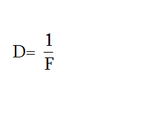

32. Ոսպնյակներ: Ոսպնյակի բնութագրերը
Ոսպնյակներ: Ոսպնյակի բնութագրերը: Օպտիկական ուժ:
Լույսի անդրադարձման և բեկման երևույթները օգտագործվում են լուսային ճառագայթների տարածման ուղղությունը փոխելու նպատակով՝ տարբեր օպտիկական սարքերում, ինչպիսիք են մանրադիտակը, աստղադիտակը, խոշորացույցը, լուսանկարչական ապարատը և այլն:
Այդ բոլոր սարքերում լուսափնջի կառավարումը իրականացվում է նրանց կառուցվածքի ամենակարևոր մասի՝ ոսպնյակի միջոցով
Ոսպնյակ է կոչվում թափանցիկ, սովորաբար ապակե մարմինը, որը երկու կողմից սահմանափակված է գնդային մակերևույթներով:
Ինչպես երևում է նկարից, ոսպնյակը սահմանափակված է R1, R2 շառավիղներով և C1, C2 կենտրոններով գնդային մակերևույթներով:
Ըստ իրենց ձևի՝ ոսպնյակները լինում են ուռուցիկ և գոգավոր:
Ուռուցիկ են այն ոսպնյակները, որոնց միջին մասն ավելի հաստ է, քան եզրերը:
Լինում են երկուռուցիկ (ա), հարթուռուցիկ (բ), գոգավոր-ուռուցիկ (գ) ոսպնյակներ:
Գոգավոր են այն ոսպնյակները, որոնց միջին մասն ավերի բարակ է, քան եզրերը:
Նրանք նույնպես լինում են 3 տեսակի. երկգոգավոր (ա),հարթ-գոգավոր (բ), գոգավոր-ուռուցիկ (գ):
Ըստ իրենց չափերի՝ ոսպնյակները լինում են բարակ և ոչ բարակ:
Բարակ են այն ոսպնյակները, որոնց միջին մասը (հաստությունը) զգալիորեն փոքր է նրանց սահմանափակող գնդային մակերևույթների շառավիղներից՝ d≪R1,R2
Այստեղ d-ն ոսպնյակի հաստությունն է, R1,R2-ը՝ գնդոլորտների շառավիղները:
Բարակ ոսպնյակների պայմանական նշաններն են՝
Կառուցման խնդիրներում հիմնականում ոսպնյակները ներկայացվում են այս պայմանական նշաններով:
Ոսպնյակի բնութագրերն են.
1. Գլխավոր օպտիկական առանցքը
Ոսպնյակը պարփակող գնդային մակերևույթների C1,C2 կենտրոնները միացնող ուղիղը կոչվում է գլխավոր օպտիկական առանցք:
Այդ առանցքով ուղղված լուսային ճառագայթները ոսպնյակով անցնելիս չեն բեկվում և իրենց ուղղությունը չեն փոխում:
2. Օպտիկական կենտրոնը
Բարակ ոսպնյակի և գլխավոր օպտիկական առանցքի հատման Օ կետը կոչվում է ոսպնյակի օպտիկական կենտրոն:
Ոսպնյակի օպտիկական կենտրոնով անցնող ճառագայթը իր ուղղությունը չի փոխում:
3. Օպտիկական առանցքը
Ոսպնյակի Օ օպտիկական կենտրոնով անցնող ցանկացած ուղիղ կոչվում է ոսպնյակի օպտիկական առանցք:
Ոսպնյակն ունի 1 գլխավոր և բազմաթիվ երկրորդային օպտիկական առանցքներ:
Եթե ուռուցիկ ոսպնյակի նյութի բեկման ցուցիչն ավելի մեծ է միջավայրի բեկման ցուցիչից, օրինակ եթե միջավայրն օդն է, իսկ ոսպնյակը ապակի, ապա ուռուցիկ ոսպնյակը հավաքող է:
Ոսպնյակը հավաքող է, եթե նրա վրա ընկնող ճառագայթների փունջը ոսպնյակով անցնելուց հետո հավաքվում է մեկ կետում:

Նույն պայմանի դեպքում գոգավոր ոսպնյակը ցրող է:
Ոսպնյակը ցրող է, եթե նրա վրա ընկնող ճառագայթների փունջը ոսպնյակով անցնելուց հետո ցրվում է բոլոր ուղղություններով:

4. Գլխավոր կիզակետը
Ոսպնյակի կարևոր բնութագրերից է նրա կիզակետը:
F կետը, որում, ոսպնյակում բեկվելուց հետո, հավաքվում են գլխավոր օպտիկական առանցքին զուգահեռ ճառագայթները, եթե ոսպնյակը հավաքող է, կամ ճառագայթների մտովի շարունակությունները, եթե ոսպնյակը ցրող է, կոչվում է ոսպնյակի գլխավոր կիզակետ:
Ցանկացած ոսպնյակ ունի երկու գլխավոր կիզակետ. ամեն կողմից մեկական, ոսպնյակի գլխավոր օպտիկական առանցքի վրա:
Ուշադրություն
Հավաքող ոսպնյակի կիզակետերը իրական են, իսկ ցրողներինը՝ կեղծ:
5. Կիզակետային հեռավորություն
Ոսպնյակի օպտիկական կենտրոնից` Oմինչև գլխավոր կիզակետ` F ընկած հեռավորությունը կոչվում է ոսպնյակի կիզակետային հեռավորություն:
Կիզակետային հեռավորությունը նշանակվում է OF կամ F, և չափվում է մետրով:
Ուշադրություն
Հավաքող ոսպնյակի կիզակետային հեռավորությունը դրական է, իսկ ցրողինը՝ բացասական:
6. Կիզակետային հարթություն
Ոսպնյակի գլխավոր կիզակետով անցնող, գլխավոր օպտիկական առանցքին ուղղահայաց հարթությունը կոչվում է կիզակետային հարթություն, իսկ ուղղահայաց ուղիղը՝ կիզակետային ուղիղ:
Եթե ոսպնյակը հավաքող է, ապա ճառագայթների կամայական զուգահեռ փունջ ոսպնյակով անցնելուց հետո հավաքվում է այդ ճառագայթներին զուգահեռ օպտիկական առանցքի և կիզակետային ուղղի հատման կետում:
Եթե ոսպնյակը ցրող է, ապա նրանում բեկվելուց հետո, ճառագայթներին զուգահեռ օպտիկական առանցքի և կիզակետային ուղղի հատման կետում կհավաքվեն այդ ճառագայթների շարունակությունները:
7. Օպտիկական ուժ
Կիզակետային հեռավորության հակադարձ մեծությունը կոչվում է ոսպնյակի օպտիկական ուժ և նշանակվում է Dտառով:

Ինչքան փոքր է ոսպնյակի կիզակետային հեռավորությունը, այնքան ավելի մեծ է նրա օպտիկական ուժը, այսինքն ՝ այնքան ավելի ուժեղ է այն բեկում ճառագայթները:
Հավաքող ոսպնյակի օպտիկական ուժը դրական է՝ D≻0, իսկ ցրող ոսպնյակի օպտիկական ուժը բացասական է՝D≺0:
Օպտիկական ուժի չափման միավորը 1 դիօպտրիան է:
1դպտր=1մ −1
1 դպտր-ն1մ կիզակետային հեռավորությամբ ոսպնյակի օպտիկական ուժն է:
Օպտիկական բազմաթիվ սարքեր կազմված են մի քանի ոսպնյակից:
Իրար հպված մի քանի ոսպնյակներով համակարգի օպտիկական ուժը հավասար է այդ համակարգի ոսպնյակների օպտիկական ուժերի գումարին:
D=D1+D2, որտեղ D-ն համակարգի օպտիկական ուժն է, իսկ D1-ը և D2-ը առանձին ոսպնյակների օպտիկական ուժերն են:
8. Խոշորացում
Ոսպնյակի միջոցով ստացվող առարկայի պատկերը կարող է առարկայից ավելի մեծ կամ փոքր չափեր ունենալ:
Ոսպնյակի խոշորացումը ցույց է տալիս, թե առարկայի պատկերի գծային չափերը առարկայի չափերի որ մասն են կազմում:
Խոշորացումը նշանակում են Гտառով:
Առարկայի պատկերի և առարկայի գծային չափերի հարաբերությունը կոչվում է ոսպնյակի խոշորացում:
որտեղ H-ը առարկայի պատկերի բարձրությունն է, իսկ h-ը՝ առարկայինը: